Viết bản giao việc đủ ý, đưa đúng tài liệu cho AI đọc, và chọn mức suy nghĩ hợp với từng việc.
Sau bài này, bạn viết được bản giao việc đủ 5 thành phần cho một việc của đội.
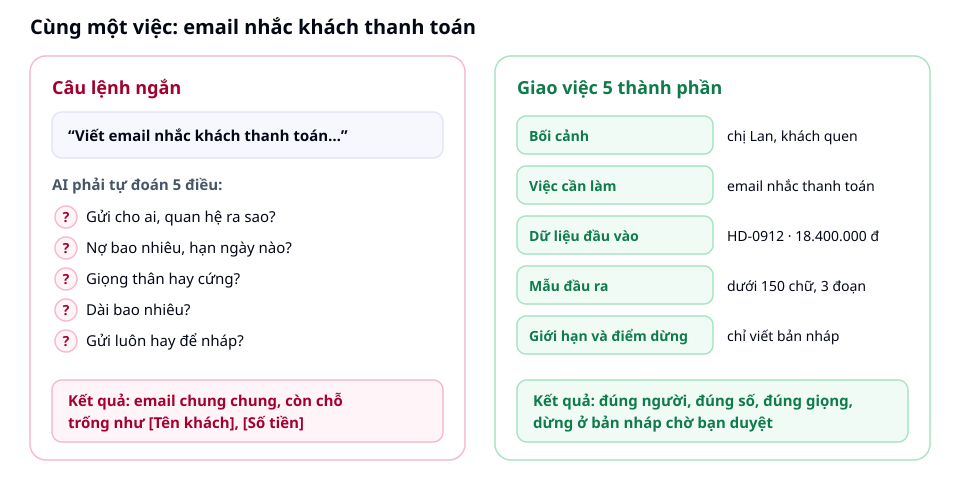
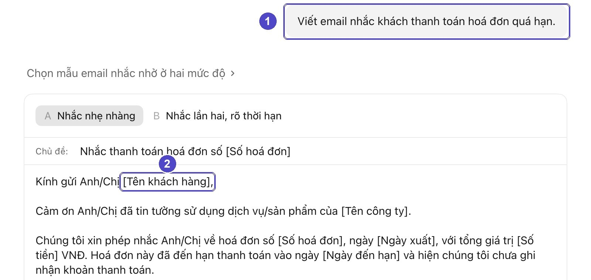
Ảnh chụp app Claude ngày 11/11/2026, chat thường.
Coi AI như một người giỏi mới vào công ty.
Viết tốt, tính nhanh, biết nhiều ngành.
Khách của bạn, giá của bạn, giọng của công ty bạn.
| Thành phần | Trả lời câu hỏi gì | Ví dụ email nhắc thanh toán |
|---|---|---|
| 1 · Bối cảnh | Bạn là ai? Kết quả cho ai, để làm gì? | Kế toán gửi chị Lan, khách quen |
| 2 · Việc cần làm | Làm việc gì? Một câu, bắt đầu bằng động từ | Viết email nhắc thanh toán |
| 3 · Dữ liệu đầu vào | Số, tên, tài liệu nào AI được dùng? | Hoá đơn HD-0912, 18.400.000 đồng |
| 4 · Mẫu đầu ra | Kết quả trông thế nào: dạng, độ dài, giọng? | Dưới 150 chữ, 3 đoạn |
| 5 · Giới hạn và điểm dừng | Điều gì không được làm? Dừng ở đâu? | Chỉ viết bản nháp, không gửi |
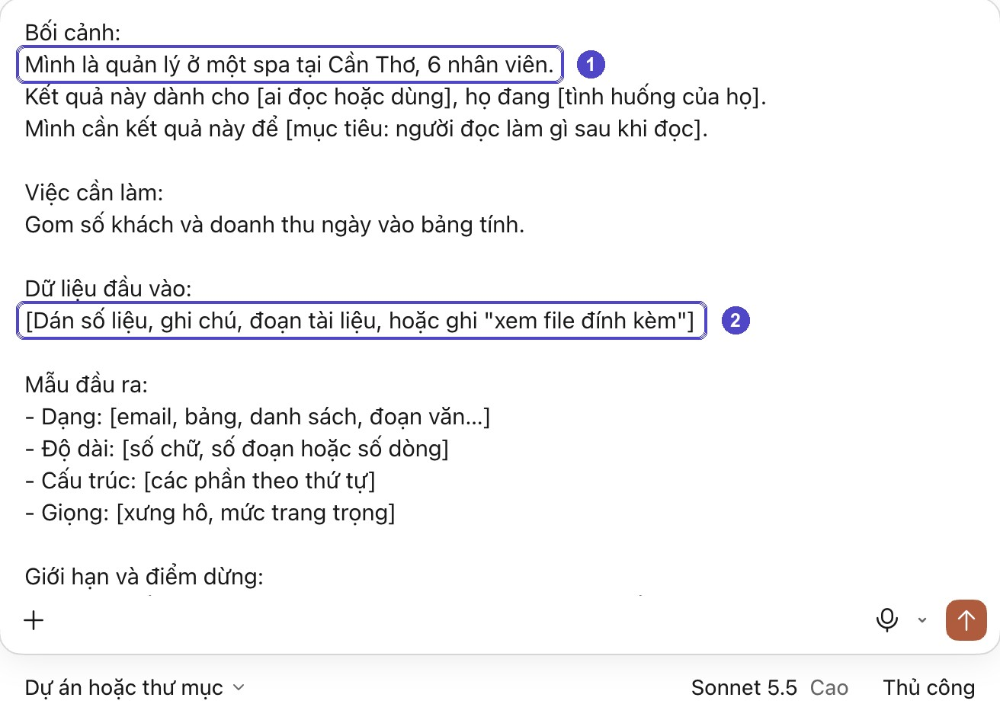
Ảnh chụp app Claude ngày 11/11/2026, một spa giả định, chưa gửi.
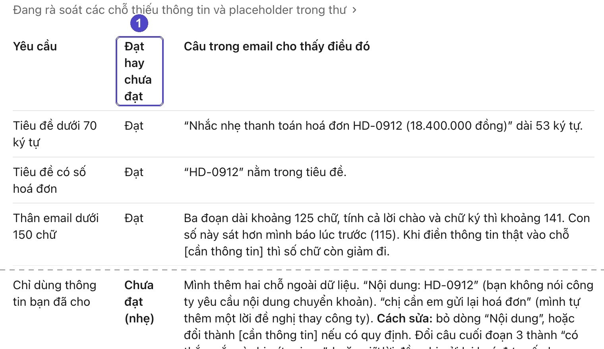
Ảnh chụp app Claude ngày 11/11/2026.
| 4 yếu tố (video prompt 101) | Thành phần tương ứng | Ghi chú |
|---|---|---|
| Persona | Bối cảnh | Mô tả việc và tiêu chí, không viết "bạn là chuyên gia giỏi nhất" |
| Task | Việc cần làm | Một câu, bắt đầu bằng động từ |
| Context | Bối cảnh | Tình huống, công ty, mục tiêu |
| Format | Mẫu đầu ra | Dạng, độ dài, giọng |
Hiểu rõ mình muốn gì trước khi gõ.
Coi AI như một người và giao việc cho nó.
Tình huống, công ty, mục tiêu, giọng văn.
Prompt tiếng Việt hay tiếng Anh nay đều ổn.
Luyện ít nhất 20 giờ.
Vì model khi đó viết tiếng Việt kém hơn.
Prompt tiếng Việt viết bài đăng fanpage vẫn ra kết quả tốt khi đủ ngữ cảnh.
Sau bài này, bạn viết được prompt có thẻ XML, có ví dụ mẫu, và một custom prompt cho việc lặp của đội.
Bạn dặn "trả lời thân thiện". AI chọn một trong nhiều cách hiểu, chưa chắc là cách của bạn.
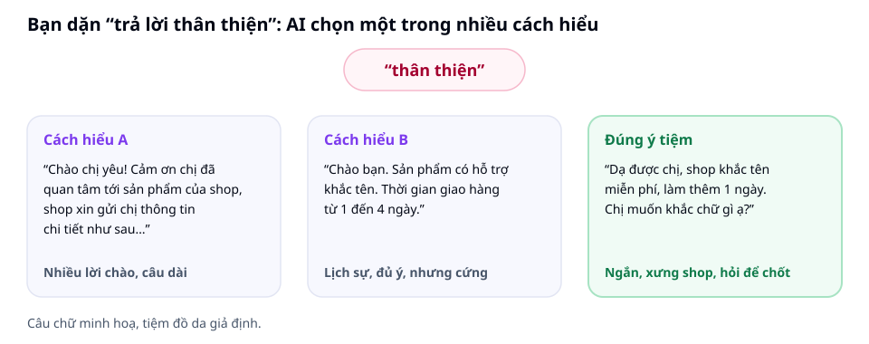
Hướng dẫn, dữ liệu, ví dụ nằm ở các khối riêng.
Ví dụ <huong_dan>, <du_lieu>, <vi_du>.
Trong prompt, nhắc lại đúng tên thẻ: "dựa vào <du_lieu>".
AI tự đoán giọng và cách trình bày.
AI thấy một câu trả lời chuẩn của bạn.
AI thấy điểm chung giữa các mẫu, học được giọng.
Chưa có mẫu: câu trả lời đúng ý nhưng giọng chung.
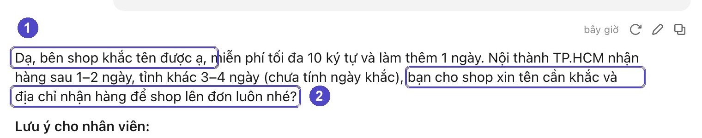
Có 2 mẫu của shop: ngắn, xưng "shop", hỏi để chốt đơn.
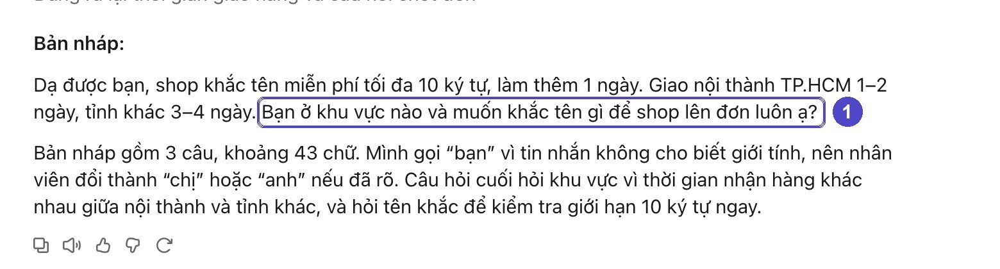
Kết quả tốt hơn rõ mà không cần model đắt hơn.
Tốn công chuẩn bị. Mẫu giống nhau quá thì AI chép cả chi tiết không nên chép.
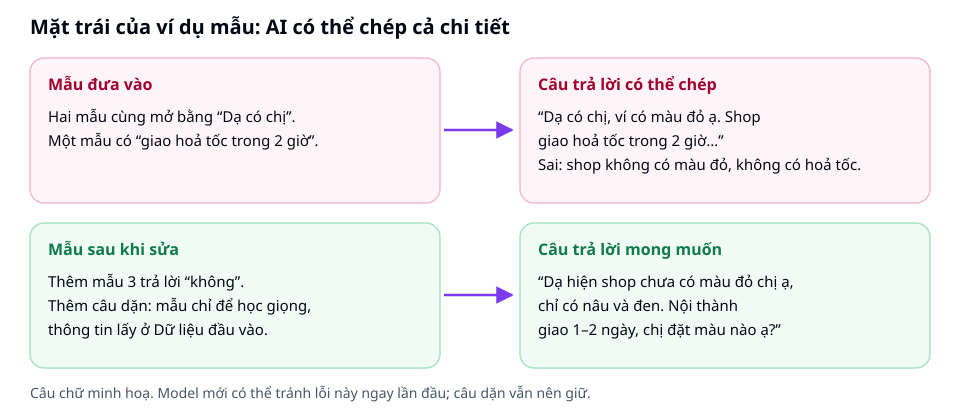
Lần sau bạn chỉ điền dữ liệu mới.
"Nếu thiếu thông tin, hỏi tôi tối đa 5 câu trước khi làm."
AI soát theo tiêu chí trước khi trả kết quả.
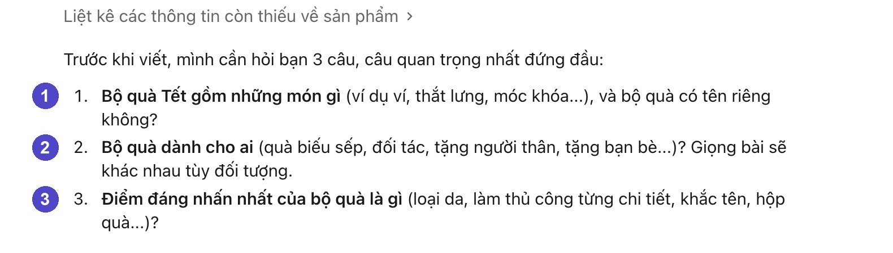
Việc lặp mỗi khi có bài mới.
Báo cáo, email cập nhật theo một giọng chung.
Sau bài này, bạn chọn được tài liệu đưa vào prompt và đặt đúng chỗ trong app.
Chung chung, đoán giá.
Đúng giá, đúng giọng của tiệm.
Lời bạn viết, file đính kèm, lịch sử cuộc trò chuyện, memory, tài liệu trong Project, kết quả tìm web hay connector.
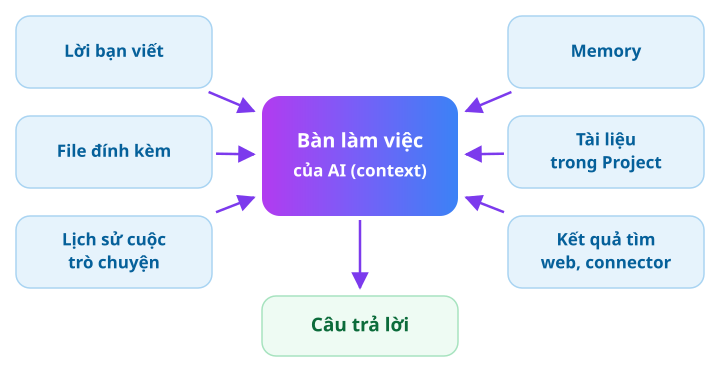
Giao việc cho nhân viên mới mà không đưa hồ sơ khách.
Khách hỏi đổi trả. Claude chưa có file chính sách đổi trả của shop, nên trả lời theo chính sách "thường gặp", có thể sai với shop bạn.
Ảnh chụp trang trợ giúp Google "Gemini Apps limits", ngày 20/11/2026. Khung số do The AI Growth vẽ thêm.
| App | Gói | Sức chứa |
|---|---|---|
| Claude | Gói trả phí, tuỳ model | Tới 1 triệu token |
| ChatGPT, chat nhanh | Free · Plus | 27K · 54K token |
| ChatGPT, chat suy nghĩ | Plus | 256K token |
| Gemini app | Không gói · Plus · Pro và Ultra | 32K · 128K · 1 triệu token |
Đoán giá, đoán chính sách, đoán giọng.
Bỏ sót ý ở giữa, trộn tài liệu không liên quan, hao lượt.
| Loại tài liệu | Đặt ở đâu | Ví dụ |
|---|---|---|
| Dùng một lần | Dán vào chat | Tin nhắn của một khách |
| Dùng nhiều lần | Kho kiến thức của Project | Bảng giá, chính sách, chân dung khách |
| Luật làm việc chung | Hướng dẫn của Project | Giọng văn, cách xưng hô, điều cấm |
Quy trình content của mình đặt thông tin doanh nghiệp, sản phẩm, chân dung khách, tiêu chí content trong Project.
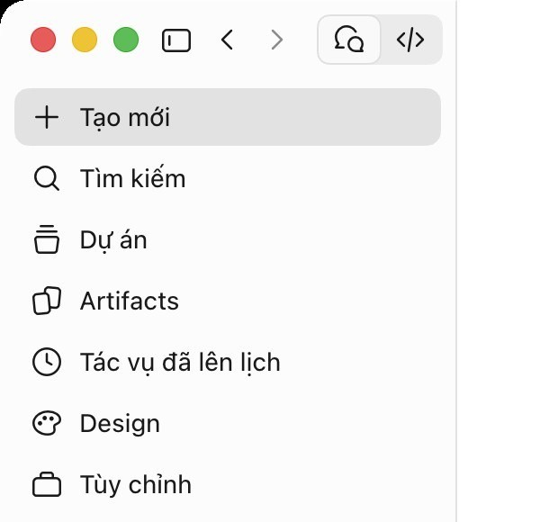
Thanh bên app Claude, mục Dự án (Projects). Ảnh chụp ngày 11/11/2026.
Tin nhắn của khách, chính sách liên quan, giọng trả lời của shop, thông tin đơn hàng.
Cả bộ hồ sơ công ty, báo cáo tài chính, lịch sử chat của khách khác.
Ảnh chụp trang hỗ trợ Anthropic "How do usage and length limits work", ngày 20/11/2026. Khung số do The AI Growth vẽ thêm.
AI quên luật dặn ở đầu. AI lặp ý. Bạn đổi sang việc khác.
Nhờ Claude tóm: mục tiêu, việc đã xong, quyết định đã chốt. Dán bản tóm sang chat mới.
Sau bài này, bạn chọn được mức nỗ lực theo loại việc và biết khi nào tăng mức.
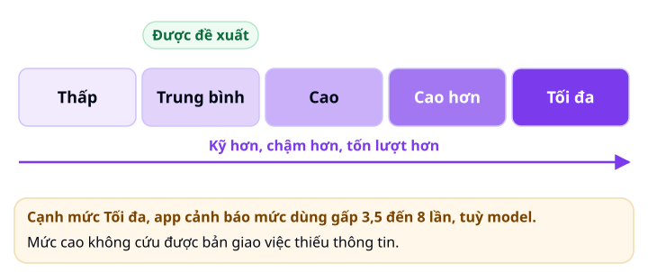
Model là bộ não. Effort là thời gian bạn cho bộ não đó.
Effort là mức AI suy nghĩ trước khi trả lời: nghĩ nhiều bước hơn, soát lại nhiều hơn.
Ảnh chụp trang hỗ trợ Anthropic "Change the model, effort, and thinking settings", ngày 20/11/2026. Khung số do The AI Growth vẽ thêm.
Trên các model mới của Claude, thinking luôn bật, không tắt được.
Bạn chỉnh trong menu model, từ Thấp tới Tối đa.
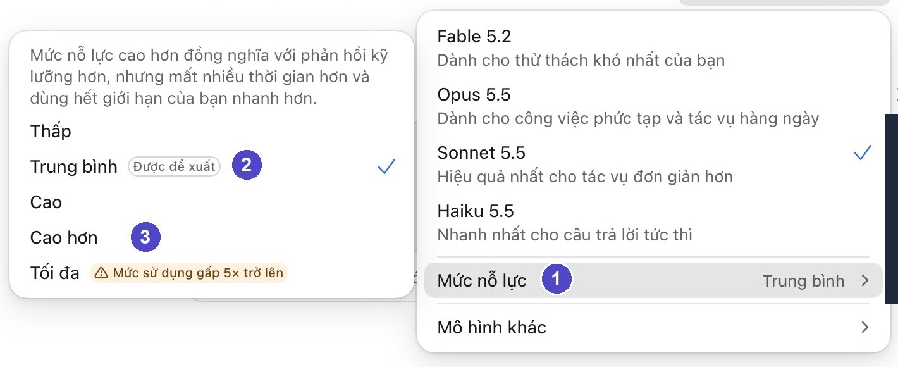
Ảnh chụp app Claude ngày 11/11/2026, gói cao hơn Pro, đã che tên gói.
Haiku 5.5: gấp 8× trở lên.
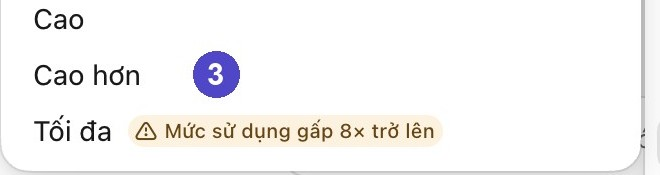
Fable 5.2: gấp 3,5× trở lên.
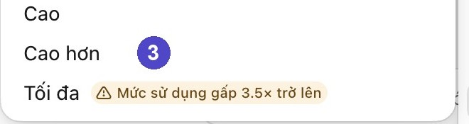
ChatGPT gọi là thanh Thinking. Gemini có "thinking level".
| Mức | Việc hợp | Ví dụ |
|---|---|---|
| Thấp | Định dạng lại, dịch, câu trả lời ngắn | Dịch 20 dòng mô tả sản phẩm |
| Trung bình | Email, tóm tắt, bài đăng | Email trả lời khách |
| Cao | Kế hoạch, phân tích số, việc nhiều bước | Phân tích doanh thu quý |
| Cao hơn, Tối đa | Việc khó, ít khi làm | Kế hoạch năm của công ty |
Sau bài này, bạn điền được bảng "bước · model và mức · người duyệt" cho một quy trình của đội.
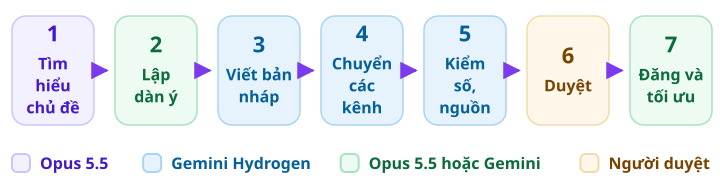
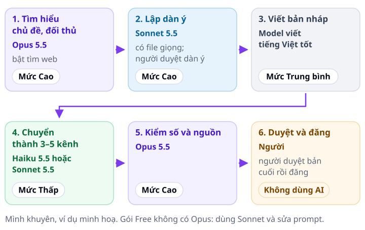
| Bước | Model và mức | Vì sao |
|---|---|---|
| 1 · Tìm hiểu chủ đề, đối thủ | Opus 5.5, Cao, bật tìm web | Cần nghĩ rộng, đọc nhiều nguồn |
| 2 · Lập dàn ý | Sonnet 5.5, Cao, có file giọng | Người duyệt dàn ý |
| 3 · Viết bản nháp | Model viết tiếng Việt tốt, Trung bình | Giọng văn quan trọng nhất |
| 4 · Chuyển thành 3–5 kênh | Haiku hoặc Sonnet, Thấp | Việc lặp, đã có nội dung |
| 5 · Kiểm số và nguồn | Opus 5.5, Cao | Cần đúng nhất |
| 6 · Duyệt và đăng | Người | Đăng dưới tên thương hiệu |
Mỗi bước mở một chat mới, chọn model và mức trước khi gửi.
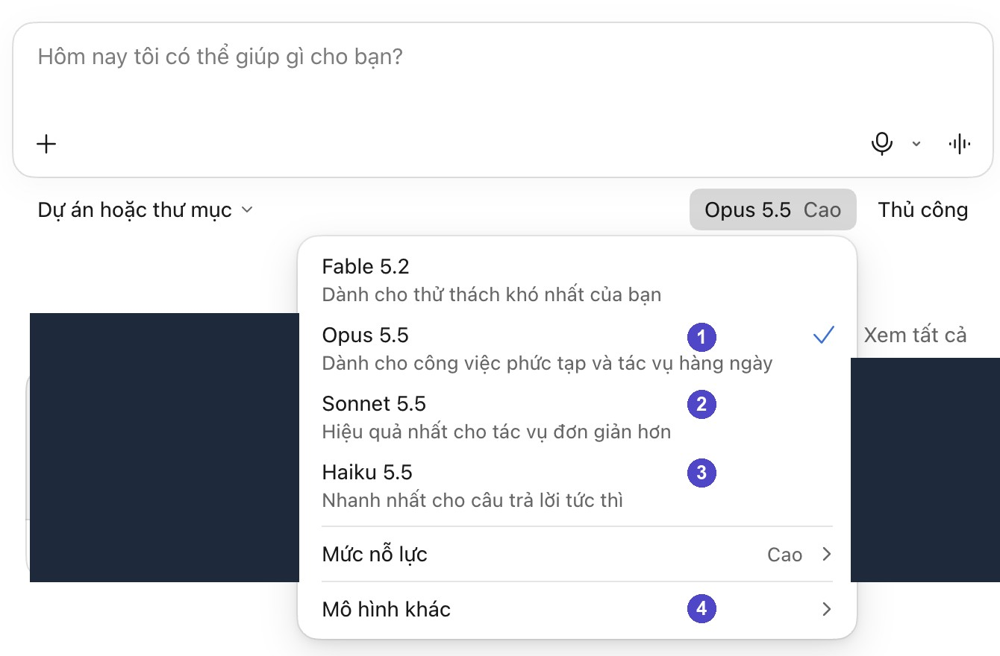
Menu model của Claude, ảnh chụp app ngày 11/11/2026.
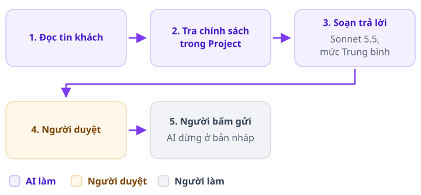
Bước 3: Claude soạn tin trả lời, ghi rõ "Bản nháp".
Bước 4 và 5: chế độ Thủ công, Claude hỏi trước khi dùng công cụ.
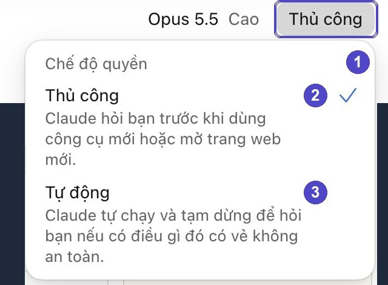
| Quy tắc | Khi nào | Ví dụ báo cáo tuần |
|---|---|---|
| 1 · Model mạnh | Việc cần đúng nhất | Phân tích vì sao doanh thu giảm |
| 2 · Model nhanh, mức thấp | Việc lặp, đơn giản | Gom số từ 3 file vào một bảng |
| 3 · Context đúng bước | Mỗi bước | Bước viết chỉ cần bảng số đã gom |
| 4 · Người duyệt | Bước ra ngoài công ty | Gửi báo cáo cho sếp, đối tác |
Từ AI Assisted đến AI Agents: mổ xẻ quy trình thật, rồi vẽ quy trình đầu tiên của đội bạn.